| 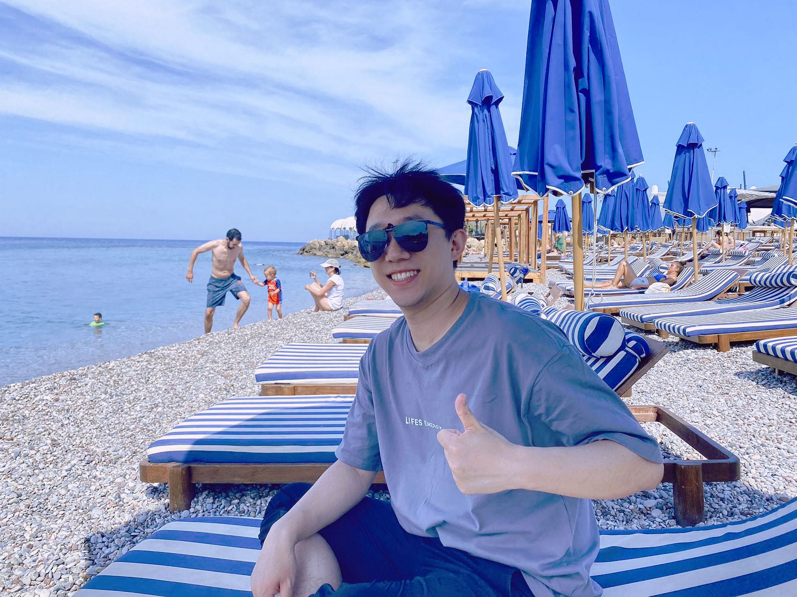 |
I am now a postdoc in University Tübingen Hospital and IMPRS-IS. My interests include neuroimaging analysis (e.g., large-scale analysis, neurodevelopment, and aging), computational neuroscience, and Connectome-Wide Association Studies (CWAS). Additionally, I am keen on promoting deep learning methods for clinical applications and leveraging neuroscience in foundation model analysis (e.g., the emergence and reasoning in LLMs).
|
- [06.2024] One papers (First Author) is accepted by JBHI.
- [06.2024] Two papers (One First Author) are accepted by MICCAI-2024.
- [06.2024] One paper (First Author) is accepted by TMI.
- [01.2024] Two papers (One First Author) are accepted by ICASSP-2024.
- [07.2023] One paper (First Author) is accepted by MedIA.
- [07.2023] One paper (First Author) is accepted by TMI (ESI Highly-cited).
- [04.2023] One paper (First Author) is accepted by Neural Networks.
- [03.2023] One paper (First Author) is accepted by MIDL-2023.
- [02.2023] One paper (First Author) is accepted by ICASSP-2023 (oral).
- [02.2023] Two papers (Other Author) are accepted by ISBI-2023.
- [02.2023] We are awarded the Open Science Excellent Author Program by Wiley.
- [09.2022] One paper (Co-First Author) is accepted by Human Brain Mapping.
- [08.2022] One paper (First Author) is accepted by BIBM-2022 (oral).
- [06.2022] Our paper (on Neuroimage:clinical) is reported by Nature Reviews Neurology.
- [04.2022] One paper (First Author) is accepted by MIDL-2022 (oral).
- [03.2022] We report the solution of MICCAI-QUBIQ-2021 challenge in MICCAI-2021-BrainLes.
- [11.2021] I win the Top in the Tecent AIMIS 2021 challenge on brain age prediction.
- [10.2021] Our team achieved the Top in MICCAI-QUBIQ-2021 challenge and MICCAI-VALDO 2021 challenge.
- [06.2021] One paper is accepted by Neuroimage:clinical .
- [10.2020] I win the Runner-up in multi-center AD diganosis challenge.
- [09.2020] I win the Runner-up in MICCAI-QUBIQ-2020 challenge.
| 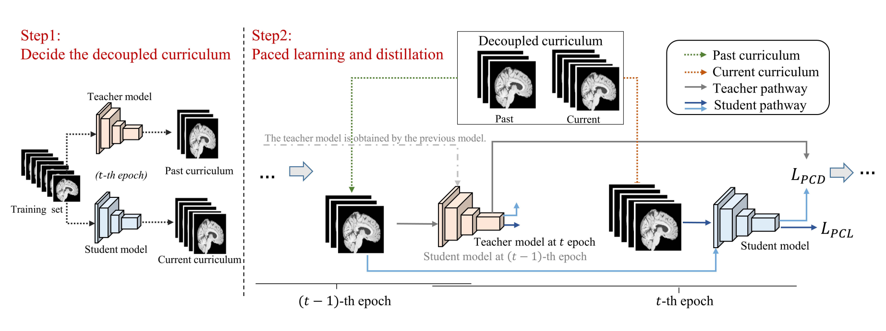 |
Yanwu Yang, Hairui Chen, Jiesi Hu, Xutao Guo, Ting Ma* MICCAI, 2024. Paper / |
| 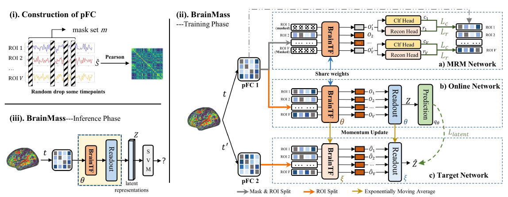 |
Yanwu Yang, Chenfei Ye, Guinan Su, Ziyao Zhang, Zhikai Chang, Hairui Chen, Piu Chan, Yue Yu* and Ting Ma* IEEE Transactions on Medical Imaging (TMI), 2024. Paper / |
| 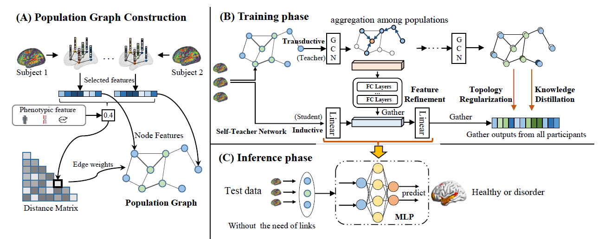 |
Yanwu Yang, Xutao Guo, Guoqing Cai, Chenfei Ye, and Ting Ma* IEEE International Conference on Acoustics, Speech and Signal Processing, ICASSP, 2022. Paper / |
| 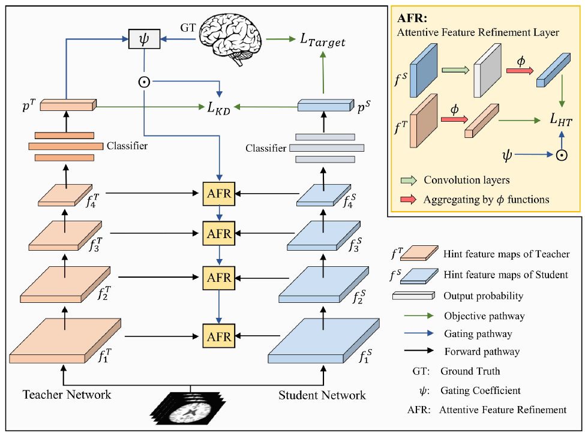 |
Yanwu Yang, Xutao Guo, Chenfei Ye, Yang Xiang*, and Ting Ma* Medical Image Analysis (MedIA), 2023. Paper / Code |
| 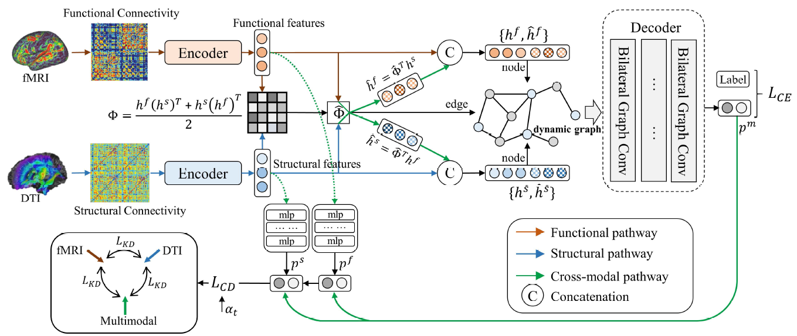 |
Yanwu Yang, Chenfei Ye, Xutao Guo, Tao Wu, Yang Xiang*, and Ting Ma* IEEE Transactions on Medical Imaging (TMI), 2023. Paper / Code |
| 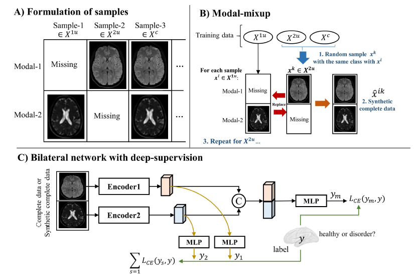 |
Yanwu Yang, Hairui Chen, Zhikai Chang, Yang Xiang, Chenfei Ye*, and Ting Ma* International Conference on Medical Imaging with Deep Learning, MIDL, 2023. Paper Code |
| 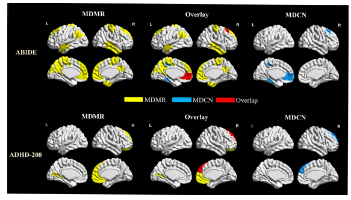 |
Yanwu Yang, Chenfei Ye, and Ting Ma* Neural Networks (NN), 2023. Paper |
| 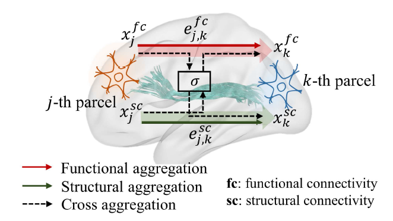 |
Yanwu Yang, Guoqing Cai, Chenfei Ye, Yang Xiang*, and Ting Ma* IEEE International Conference on Acoustics, Speech and Signal Processing, ICASSP, 2022. Paper |
| 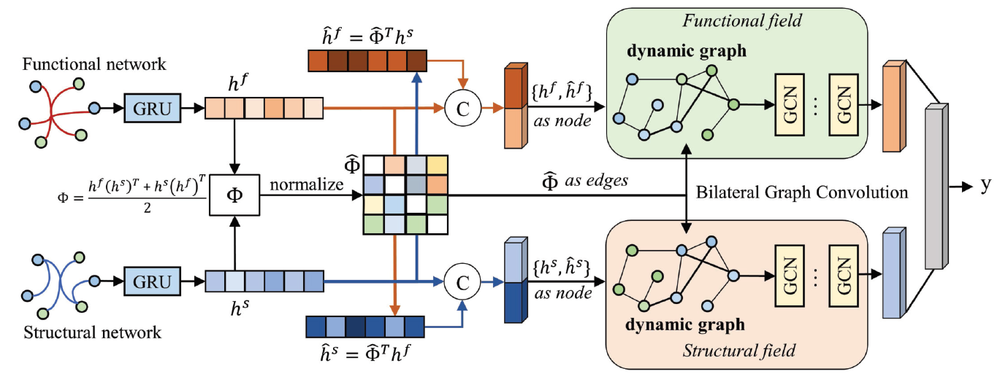 |
Yanwu Yang, Xutao Guo, Zhikai Chang, Chenfei Ye, Yang Xiang*, and Ting Ma* IEEE International Conference on Bioinformatics and Biomedicine, (BIBM), 2021. Paper |
| 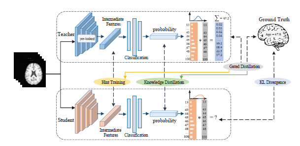 |
Yanwu Yang, Xutao Guo, Chenfei Ye, Yang Xiang*, and Ting Ma* International Conference on Medical Imaging with Deep Learning, MIDL, 2022. Paper / Code |
| 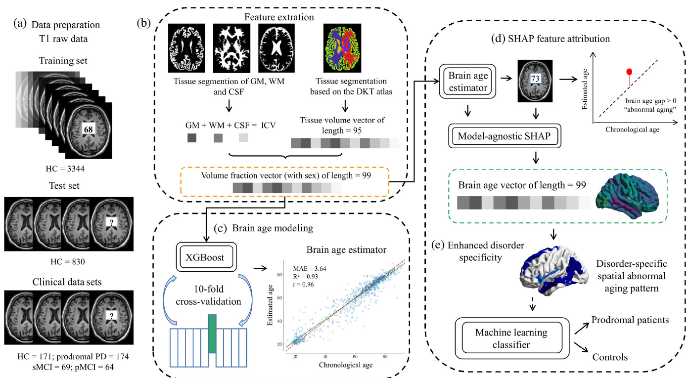 |
Chen Ran, Yanwu Yang, Chenfei Ye, Haiyan Lv, and Ting Ma* Human Brain Mapping, 2022. Paper |

|
Yanwu Yang, Chenfei Ye, Junyan Sun, Li Liang, Haiyan Lv, Linlin Gao, Jiliang Fang, Ting Ma*, and Tao Wu* NeuroImage: Clinical, 2021. Paper |

|
on Brain Age Prediction |

|
on Medical Image Segmentation Uncertainty Quantification |
- Runner-up on MICCAI-QUBIQ-2020 challenge.
- Runner-up on Multi-center AD diganosis challenge.
Last Update: Nov 4, 2024
Published with GitHub Pages